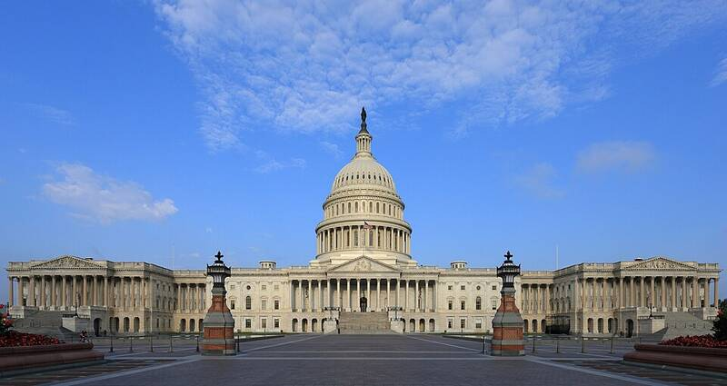

U.S. Capitol
Washington, DC

Home of Congress, where the Armed Services, Intelligence, and Oversight committees hold UAP hearings and write UAP law. 1
Open in the interactive Watcher
Sources
- United States Capitol Wikipedia
Washington, DC

Home of Congress, where the Armed Services, Intelligence, and Oversight committees hold UAP hearings and write UAP law. 1
Open in the interactive Watcher